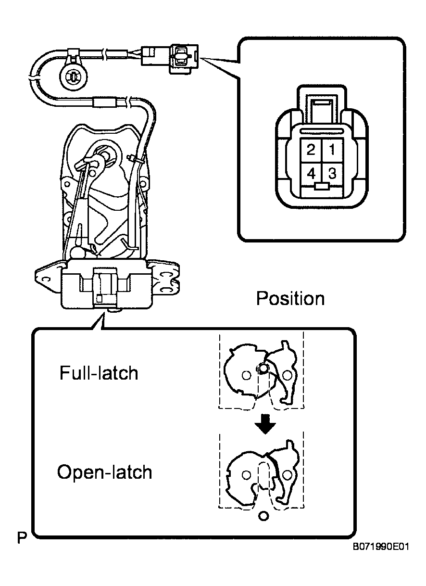
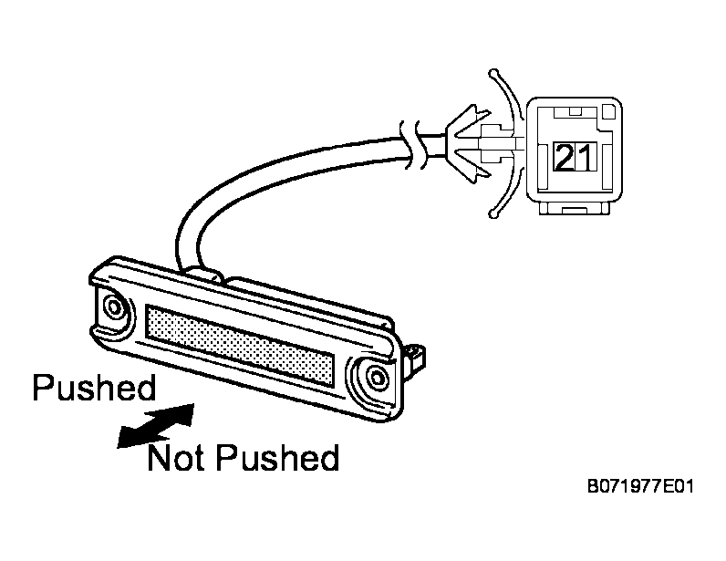

Back Door Lock: Inspection
- INSPECT BACK DOOR LOCK ASSEMBLY
- Check operation of the door lock.
- Using a screwdriver, move the latch to the full latch position.
- Apply battery voltage to the door lock terminals and check operation of the latch.
OK : Go to Next Step

Courtesy of © TOYOTA, LICENSE AGREEMENT TMS1002TESTER CONNECTION SPECIFIED CONDITIONMeasurement Condition Specified Condition Battery positive (+) --> Terminal 3
Battery negative (-) --> Terminal 4Latch turns to open-latch position If the result is not as specified, replace the door lock assembly.
- Measure the resistance of the back door courtesy switch.
Standard resistance
TESTER CONNECTION SPECIFIED CONDITIONTester Connection Door Lock Latch Condition Specified Condition 1 - 2 Open-latch Below 1 Ω 1 - 2 Full-latch 10 kΩ or higher If the result is not as specified, replace the door lock assembly.
- Check operation of the door lock.
- INSPECT BACK DOOR OPENER SWITCH ASSEMBLY
- Measure the resistance of the switch.
Standard resistance

Courtesy of © TOYOTA, LICENSE AGREEMENT TMS1002TESTER CONNECTION SPECIFIED CONDITIONTester Connection Door Lock Latch Condition Specified Condition 1 - 2 Not pushed 10 kΩ or higher 1 - 2 Pushed Below 1 Ω If the result is not as specified, replace the switch assembly.
- Measure the resistance of the switch.